Application of singe nuclei RNA sequencing to assess the hepatic effects of 2,3,7,8-tetrachlorodibenzo-p-dioxin
Rance Nault1
Data was collected as part of preliminary method development and testing for single-nuclei RNA-sequencing from mouse livers of 2,3,7,8-tetrachlorodibenzo-p-dioxin (TCDD) treated mice. For experimental and model details see our preprint on bioRxiv. A total of 4 samples (2 vehicle, 2 TCDD) were examined by snRNA-seq. Samples were run in two batches (Day 1 - VEH64; Day 2 - VEH62, TCDD51, TCDD59).
For more details please see our publication
Raw sequencing data and final Seurat object are deposited in the Gene Expression Omnibus (GEO)Single-nuclei RNA sequencing analysis code
Setting up the environment
Load required libraries
library(Seurat, quietly = TRUE) #Single-nuclei analysis tools
library(scater, quietly = TRUE) #QC
library(DoubletFinder, quietly = TRUE) #Doublet detection
library(mvoutlier, quietly = TRUE) #Dependency
library(pheatmap, quietly = TRUE) #Draw heatmaps
library(mclust, quietly = TRUE) #Draw heatmaps
library(slingshot, quietly = TRUE) #Trajectory analysis
library(gam, quietly = TRUE) #Dependency
library(DESeq2, quietly = TRUE) #Pseudobulk analysisCreate a function for easier data import
#User-defined data import function
import10x <- function(path, sample.id, treatment, batch_ID, cellmin, featmin) {
seu.data <- Read10X(data.dir = path)
seu <- CreateSeuratObject(counts = seu.data, project = sample.id, min.cells = cellmin, min.features = featmin)
seu[["percent.mt"]] <- PercentageFeatureSet(seu, pattern = "^mt-") #Calculate percent mitochondrial genes
seu[["percent.hb"]] <- PercentageFeatureSet(seu, pattern = "^Hb[a-b]-") #Calculate the percent hemoglobin genes
seu[["batch_ID"]] <- batch_ID #Assign a batch ID in the metadata
seu$treatment <- treatment
return(list(ssize = dim(seu), seu.object = seu)) #Indicate treatment group in the metadata
}Display session information
sessionInfo()## R version 3.6.0 beta (2019-04-14 r76394)
## Platform: x86_64-pc-linux-gnu (64-bit)
## Running under: CentOS Linux 7 (Core)
##
## Matrix products: default
## BLAS/LAPACK: /opt/software/OpenBLAS/0.3.1-GCC-7.3.0-2.30/lib/libopenblas_sandybridgep-r0.3.1.so
##
## locale:
## [1] LC_CTYPE=en_US.UTF-8 LC_NUMERIC=C
## [3] LC_TIME=en_US.UTF-8 LC_COLLATE=en_US.UTF-8
## [5] LC_MONETARY=en_US.UTF-8 LC_MESSAGES=en_US.UTF-8
## [7] LC_PAPER=en_US.UTF-8 LC_NAME=C
## [9] LC_ADDRESS=C LC_TELEPHONE=C
## [11] LC_MEASUREMENT=en_US.UTF-8 LC_IDENTIFICATION=C
##
## attached base packages:
## [1] splines parallel stats4 stats graphics grDevices utils
## [8] datasets methods base
##
## other attached packages:
## [1] DESeq2_1.24.0 gam_1.16.1
## [3] foreach_1.4.7 slingshot_1.2.0
## [5] princurve_2.1.4 mclust_5.4.5
## [7] pheatmap_1.0.12 mvoutlier_2.0.9
## [9] sgeostat_1.0-27 DoubletFinder_2.0.2
## [11] scater_1.12.2 ggplot2_3.2.1
## [13] SingleCellExperiment_1.6.0 SummarizedExperiment_1.14.1
## [15] DelayedArray_0.10.0 BiocParallel_1.18.1
## [17] matrixStats_0.55.0 Biobase_2.44.0
## [19] GenomicRanges_1.36.1 GenomeInfoDb_1.20.0
## [21] IRanges_2.18.3 S4Vectors_0.22.1
## [23] BiocGenerics_0.30.0 Seurat_3.1.2
## [25] reshape2_1.4.3 dplyr_0.8.4
## [27] cowplot_1.0.0 RColorBrewer_1.1-2
## [29] Cairo_1.5-10 knitr_1.27
##
## loaded via a namespace (and not attached):
## [1] rgl_0.100.30 rsvd_1.0.2 vcd_1.4-5
## [4] Hmisc_4.3-0 ica_1.0-2 zinbwave_1.6.0
## [7] class_7.3-15 lmtest_0.9-37 glmnet_3.0-2
## [10] crayon_1.3.4 laeken_0.5.0 MASS_7.3-51.4
## [13] backports_1.1.4 nlme_3.1-139 rlang_0.4.4
## [16] XVector_0.24.0 ROCR_1.0-7 readxl_1.3.1
## [19] irlba_2.3.3 limma_3.40.6 phylobase_0.8.6
## [22] manipulateWidget_0.10.0 bit64_0.9-7 glue_1.4.1
## [25] rngtools_1.5 sctransform_0.2.1 vipor_0.4.5
## [28] AnnotationDbi_1.46.1 haven_2.2.0 tidyselect_0.2.5
## [31] NADA_1.6-1 rio_0.5.16 fitdistrplus_1.0-14
## [34] XML_3.99-0.3 tidyr_1.0.2 zoo_1.8-7
## [37] xtable_1.8-3 magrittr_1.5 evaluate_0.14
## [40] bibtex_0.4.2.2 Rdpack_0.11-1 zlibbioc_1.30.0
## [43] sn_1.5-4 rstudioapi_0.11 miniUI_0.1.1.1
## [46] sp_1.3-2 robCompositions_2.1.0 rpart_4.1-15
## [49] pls_2.7-2 zCompositions_1.3.3-1 locfdr_1.1-8
## [52] shiny_1.3.1 BiocSingular_1.0.0 xfun_0.12
## [55] multtest_2.42.0 cluster_2.1.0 caTools_1.18.0
## [58] tibble_2.1.1 ggrepel_0.8.1 ape_5.3
## [61] listenv_0.8.0 stabledist_0.7-1 png_0.1-7
## [64] reshape_0.8.8 future_1.16.0 withr_2.1.2
## [67] bitops_1.0-6 ranger_0.12.1 plyr_1.8.4
## [70] cellranger_1.1.0 pcaPP_1.9-73 e1071_1.7-3
## [73] pillar_1.4.3 RcppParallel_4.4.4 gplots_3.0.1.2
## [76] multcomp_1.4-11 flexmix_2.3-15 kernlab_0.9-29
## [79] DelayedMatrixStats_1.6.1 vctrs_0.2.2 NMF_0.21.0
## [82] metap_1.3 tools_3.6.0 foreign_0.8-75
## [85] rncl_0.8.3 beeswarm_0.2.3 munsell_0.5.0
## [88] compiler_3.6.0 abind_1.4-5 httpuv_1.5.1
## [91] pkgmaker_0.31 plotly_4.9.1 GenomeInfoDbData_1.2.1
## [94] gridExtra_2.3 edgeR_3.26.8 lattice_0.20-38
## [97] mutoss_0.1-12 later_0.8.0 jsonlite_1.6
## [100] GGally_1.4.0 scales_1.0.0 pbapply_1.4-2
## [103] carData_3.0-3 genefilter_1.66.0 lazyeval_0.2.2
## [106] promises_1.0.1 car_3.0-6 doParallel_1.0.15
## [109] latticeExtra_0.6-29 R.utils_2.9.2 checkmate_1.9.4
## [112] reticulate_1.14 rmarkdown_1.14 openxlsx_4.1.4
## [115] sandwich_2.5-1 webshot_0.5.2 Rtsne_0.15
## [118] forcats_0.4.0 copula_0.999-19.1 softImpute_1.4
## [121] uwot_0.1.5 igraph_1.2.4.2 HDF5Array_1.12.3
## [124] survival_3.1-8 numDeriv_2016.8-1.1 yaml_2.2.0
## [127] plotrix_3.7-7 prabclus_2.3-2 htmltools_0.3.6
## [130] memoise_1.1.0 modeltools_0.2-22 locfit_1.5-9.1
## [133] viridisLite_0.3.0 digest_0.6.23 rrcov_1.5-2
## [136] assertthat_0.2.1 mime_0.8 rappdirs_0.3.1
## [139] registry_0.5-1 npsurv_0.4-0 RSQLite_2.2.0
## [142] future.apply_1.4.0 lsei_1.2-0 data.table_1.12.8
## [145] blob_1.2.1 R.oo_1.23.0 RNeXML_2.4.2
## [148] Formula_1.2-3 Rhdf5lib_1.6.3 fpc_2.2-4
## [151] RCurl_1.98-1.1 cvTools_0.3.2 hms_0.5.3
## [154] base64enc_0.1-3 rhdf5_2.28.1 colorspace_1.4-1
## [157] mnormt_1.5-5 ggbeeswarm_0.6.0 SDMTools_1.1-221.2
## [160] shape_1.4.4 nnet_7.3-12 Rcpp_1.0.3
## [163] ADGofTest_0.3 RANN_2.6.1 mvtnorm_1.0-10
## [166] pspline_1.0-18 VIM_4.8.0 truncnorm_1.0-8
## [169] R6_2.4.0 grid_3.6.0 acepack_1.4.1
## [172] ggridges_0.5.2 lifecycle_0.1.0 zip_2.0.4
## [175] TFisher_0.2.0 curl_3.3 gdata_2.18.0
## [178] leiden_0.3.2 robustbase_0.93-5 Matrix_1.2-17
## [181] howmany_0.3-1 RcppAnnoy_0.0.14 TH.data_1.0-10
## [184] iterators_1.0.12 stringr_1.4.0 htmlwidgets_1.5.1
## [187] purrr_0.3.2 crosstalk_1.0.0 globals_0.12.5
## [190] htmlTable_1.13.3 clusterExperiment_2.4.4 codetools_0.2-16
## [193] gtools_3.8.1 prettyunits_1.0.2 gridBase_0.4-7
## [196] RSpectra_0.16-0 R.methodsS3_1.7.1 gtable_0.3.0
## [199] tsne_0.1-3 DBI_1.1.0 httr_1.4.1
## [202] KernSmooth_2.23-16 stringi_1.4.3 progress_1.2.2
## [205] uuid_0.1-2 diptest_0.75-7 annotate_1.62.0
## [208] viridis_0.5.1 xml2_1.2.2 boot_1.3-24
## [211] BiocNeighbors_1.2.0 geneplotter_1.62.0 ade4_1.7-13
## [214] sROC_0.1-2 DEoptimR_1.0-8 bit_1.1-15.1
## [217] jpeg_0.1-8.1 pkgconfig_2.0.3 gsl_2.1-6
## [220] gbRd_0.4-11Data import
Import datasets
Raw sequencing reads were aligned using CellRanger 3.0.2 (10X Genomics). Datasets were filtered to include only genes detected in at least 3 nuclei, and nuclei which express at least 200 unique genes (features). Nuclei which possess >= 1% mitochondrial RNA were also excluded from subsequent analyses as nuclei isolation should result in little to no mitochondrial contamination.
cellmin = 3
featmin = 200
mtmax = 1
VEH62 <- import10x(paste(path, "VEH62/outs/filtered_feature_bc_matrix/", sep = ""),
"VEH62", "CONTROL", "Day2", cellmin, featmin)
VEH62$seu.object <- subset(VEH62$seu.object, subset = percent.mt < mtmax)
VEH64 <- import10x(paste(path, "VEH64/outs/filtered_feature_bc_matrix/", sep = ""),
"VEH64", "CONTROL", "Day1", cellmin, featmin)
VEH64$seu.object <- subset(VEH64$seu.object, subset = percent.mt < mtmax)
TCDD51 <- import10x(paste(path, "TCDD51/outs/filtered_feature_bc_matrix/", sep = ""),
"TCDD51", "TCDD", "Day2", cellmin, featmin)
TCDD51$seu.object <- subset(TCDD51$seu.object, subset = percent.mt < mtmax)
TCDD59 <- import10x(paste(path, "TCDD59/outs/filtered_feature_bc_matrix/", sep = ""),
"TCDD59", "TCDD", "Day2", cellmin, featmin)
TCDD59$seu.object <- subset(TCDD59$seu.object, subset = percent.mt < mtmax)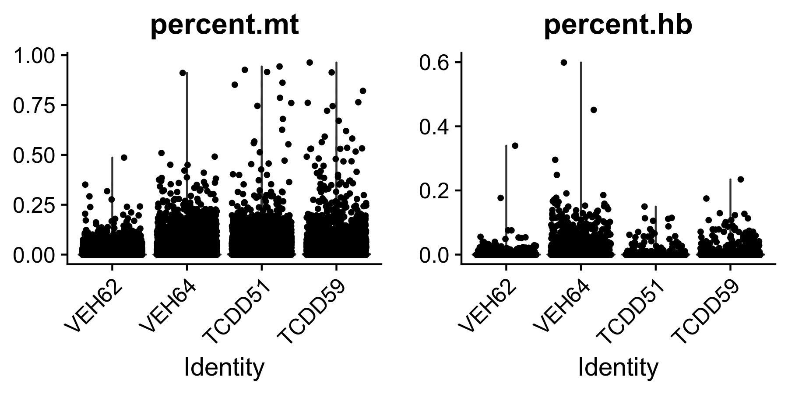 Figure 0. Percent expressed mitochondrial and hemoglobin genes in samples prior to filtering.
Dataset summary (pre-QC)
Table 1. Number of genes and nuclei sequenced in liver samples of mice gavaged with sesame oil vehicle or 30 ug/kg TCDD every 4 days for 28 days.
| Number of Genes | Number of Nuclei | Number of Genes after QC | Number of Nuclei after QC | |
|---|---|---|---|---|
| VEH62 | 17575 | 3403 | 17575 | 3402 |
| VEH64 | 17098 | 6992 | 17098 | 6985 |
| TCDD51 | 18402 | 3044 | 18402 | 3037 |
| TCDD59 | 18607 | 3275 | 18607 | 3265 |
A total of 16714 (10395 vehicle and 6319 treated) nuclei were transcriptomes were profiled. The average number of genes detected in each sample was 17920 and the median number of unique expressed genes in individual nuclei was 1696 with a median UMI count of with a median UMI count of 3390
Prepare datasets for next steps
samples.list <- c(VEH62$seu.object,
VEH64$seu.object,
TCDD51$seu.object,
TCDD59$seu.object)Scater QC
Scater uses the SingleCellExperiment format.
Convert Seurat object to singleCellExperiment format
VEH62.sce <- as.SingleCellExperiment(samples.list[[1]])
VEH64.sce <- as.SingleCellExperiment(samples.list[[2]])
TCDD51.sce <- as.SingleCellExperiment(samples.list[[3]])
TCDD59.sce <- as.SingleCellExperiment(samples.list[[4]])Calculate QC metrics
We use scater to calculate various QC metrics including distribution of highest abundance genes and frequency
VEH62.sce <- calculateQCMetrics(VEH62.sce)
VEH64.sce <- calculateQCMetrics(VEH64.sce)
TCDD51.sce <- calculateQCMetrics(TCDD51.sce)
TCDD59.sce <- calculateQCMetrics(TCDD59.sce)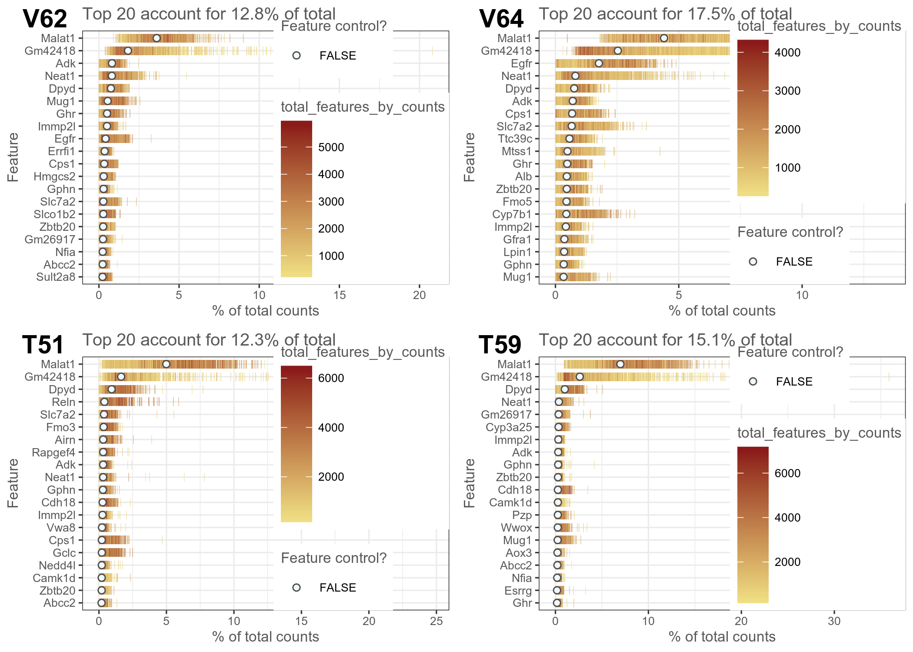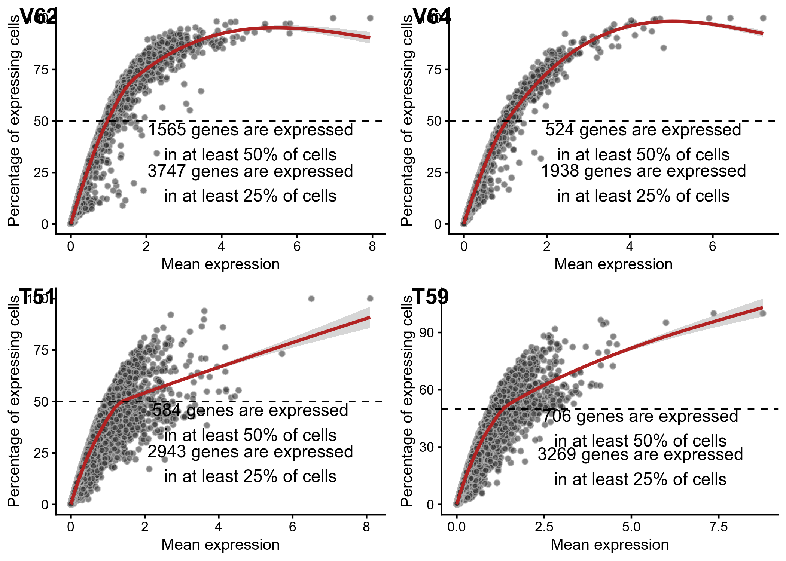 Figure 1. QC plots from scater showing (left) genes with highest expression in individual nuclei and (right) frequency of genes relative to their expression level.
PCA Outlier Detection
VEH62.sce <- runPCA(VEH62.sce, use_coldata = TRUE, detect_outliers = TRUE)
VEH64.sce <- runPCA(VEH64.sce, use_coldata = TRUE, detect_outliers = TRUE)
TCDD51.sce <- runPCA(TCDD51.sce, use_coldata = TRUE, detect_outliers = TRUE)
TCDD59.sce <- runPCA(TCDD59.sce, use_coldata = TRUE, detect_outliers = TRUE)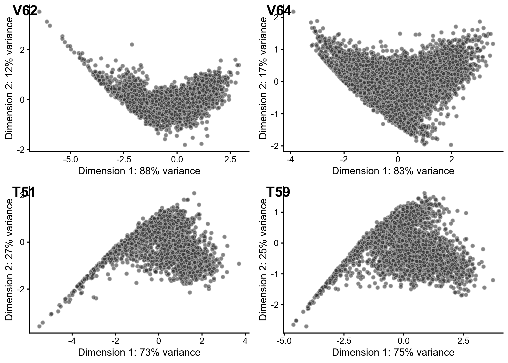
Figure 2. Principal components analysis of scatar QC metrics
Table 2. Summary of nuclei passing or being flagged in each sample.
| Row.names | QC Flagged - VE62 | QC Flagged - VEH64 | QC Flagged - TCDD51 | QC Flagged - TCDD59 |
|---|---|---|---|---|
| FALSE | 3318 | 6985 | 3000 | 3229 |
| TRUE | 84 | NA | 37 | 36 |
Return to object list
Replace the seurat objects with the SCEs containing the QC metrics
samples.list[[1]] <- as.Seurat(VEH62.sce)
samples.list[[2]] <- as.Seurat(VEH64.sce)
samples.list[[3]] <- as.Seurat(TCDD51.sce)
samples.list[[4]] <- as.Seurat(TCDD59.sce)Doublet detection
Preparing sample datasets for doublet detection
A clustering resolution of 0.2 was selected based on preliminary evaluations which produced similar number of clusters as identified hepatic cell types from previous studies.
# Normalize and scale datasets independently
samples.list <- lapply(X = samples.list, FUN = function(x) {
x <- NormalizeData(x, normalization.method = "LogNormalize", scale.factor = 10000, verbose = FALSE)
x <- FindVariableFeatures(x, selection.method = "vst", nfeatures = 2000, verbose = FALSE)
x <- ScaleData(x, features = rownames(x), verbose = FALSE)
})
# Run dimensionality reduction and identify nuclei clusters
samples.list <- lapply(X = samples.list, FUN = function(x) {
DefaultAssay(x) <- 'RNA'
x <- RunPCA(x, features = VariableFeatures(object = x), verbose = FALSE)
x <- FindNeighbors(x, reduction = "pca", dims = 1:20, verbose = FALSE)
x <- FindClusters(x, resolution = 0.2, verbose = FALSE)
x <- RunTSNE(x, dims = 1:30, max_iter = 2000, verbose = FALSE)
x <- RunUMAP(x, dims = 1:30, verbose = FALSE)
})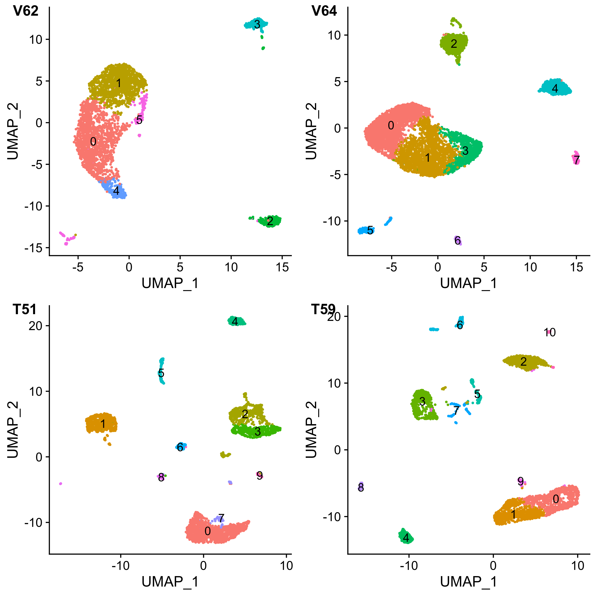
Figure 3. UMAP visualization of individual liver samples.
Doublet detection
Doublet detection is performed using DoubletFinder assuming a 3.1% doublet formation rate based on the low rate for 10X genomics shown here
- ~0.8% per 1,000 cells
- ~1.6% per 2,000 cells
- ~2.3% per 3,000 cells
- ~3.1% per 4,000 cells
- ~3.9% per 5,000 cells
- …
VEH62
sweep.res.list_liver <- paramSweep_v3(samples.list[[1]], PCs = 1:10, sct = FALSE)
sweep.stats_liver <- summarizeSweep(sweep.res.list_liver, GT = FALSE)
bcmvn_liver <- find.pK(sweep.stats_liver)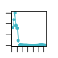
homotypic.prop <- modelHomotypic(samples.list[[1]]@meta.data$SCT_snn_res.0.2)
nExp_poi <- round(0.031*length(rownames(samples.list[[1]]@meta.data))) # Assuming 3.1% doublet formation rate - tailor for your dataset
nExp_poi.adj <- round(nExp_poi*(1 - homotypic.prop))
samples.list[[1]] <- doubletFinder_v3(samples.list[[1]], PCs = 1:10, pN = 0.25, pK = 0.09, nExp = nExp_poi, reuse.pANN = FALSE, sct = FALSE)
samples.list[[1]] <- doubletFinder_v3(samples.list[[1]], PCs = 1:10, pN = 0.25, pK = 0.09, nExp = nExp_poi.adj, reuse.pANN = "pANN_0.25_0.09_105", sct = FALSE)VEH64
sweep.res.list_liver <- paramSweep_v3(samples.list[[2]], PCs = 1:10, sct = FALSE)
sweep.stats_liver <- summarizeSweep(sweep.res.list_liver, GT = FALSE)
bcmvn_liver <- find.pK(sweep.stats_liver)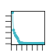
homotypic.prop <- modelHomotypic(samples.list[[2]]@meta.data$SCT_snn_res.0.2)
nExp_poi <- round(0.031*length(rownames(samples.list[[2]]@meta.data))) # Assuming 3.1% doublet formation rate - tailor for your dataset
nExp_poi.adj <- round(nExp_poi*(1 - homotypic.prop))
samples.list[[2]] <- doubletFinder_v3(samples.list[[2]], PCs = 1:10, pN = 0.25, pK = 0.09, nExp = nExp_poi, reuse.pANN = FALSE, sct = FALSE)
samples.list[[2]] <- doubletFinder_v3(samples.list[[2]], PCs = 1:10, pN = 0.25, pK = 0.09, nExp = nExp_poi.adj, reuse.pANN = "pANN_0.25_0.09_217", sct = FALSE)TCDD51
sweep.res.list_liver <- paramSweep_v3(samples.list[[3]], PCs = 1:10, sct = FALSE)
sweep.stats_liver <- summarizeSweep(sweep.res.list_liver, GT = FALSE)
bcmvn_liver <- find.pK(sweep.stats_liver)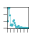
homotypic.prop <- modelHomotypic(samples.list[[3]]@meta.data$SCT_snn_res.0.2)
nExp_poi <- round(0.031*length(rownames(samples.list[[3]]@meta.data))) # Assuming 3.1% doublet formation rate - tailor for your dataset
nExp_poi.adj <- round(nExp_poi*(1 - homotypic.prop))
samples.list[[3]] <- doubletFinder_v3(samples.list[[3]], PCs = 1:10, pN = 0.25, pK = 0.09, nExp = nExp_poi, reuse.pANN = FALSE, sct = FALSE)
samples.list[[3]] <- doubletFinder_v3(samples.list[[3]], PCs = 1:10, pN = 0.25, pK = 0.09, nExp = nExp_poi.adj, reuse.pANN = "pANN_0.25_0.09_94", sct = FALSE)TCDD59
sweep.res.list_liver <- paramSweep_v3(samples.list[[4]], PCs = 1:10, sct = FALSE)
sweep.stats_liver <- summarizeSweep(sweep.res.list_liver, GT = FALSE)
bcmvn_liver <- find.pK(sweep.stats_liver)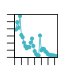
homotypic.prop <- modelHomotypic(samples.list[[4]]@meta.data$SCT_snn_res.0.2)
nExp_poi <- round(0.031*length(rownames(samples.list[[4]]@meta.data))) # Assuming 3.1% doublet formation rate - tailor for your dataset
nExp_poi.adj <- round(nExp_poi*(1 - homotypic.prop))
samples.list[[4]] <- doubletFinder_v3(samples.list[[4]], PCs = 1:10, pN = 0.25, pK = 0.09, nExp = nExp_poi, reuse.pANN = FALSE, sct = FALSE)
samples.list[[4]] <- doubletFinder_v3(samples.list[[4]], PCs = 1:10, pN = 0.25, pK = 0.09, nExp = nExp_poi.adj, reuse.pANN = "pANN_0.25_0.09_101", sct = FALSE)Removing doublets
# VEH62
samples.list[[1]] <- subset(samples.list[[1]], subset = outlier == FALSE)
samples.list[[1]] <- subset(samples.list[[1]], subset = DF.classifications_0.25_0.09_105 == "Singlet")
# VEH64
samples.list[[2]] <- subset(samples.list[[2]], subset = outlier == FALSE)
samples.list[[2]] <- subset(samples.list[[2]], subset = DF.classifications_0.25_0.09_217 == "Singlet")
# TCDD51
samples.list[[3]] <- subset(samples.list[[3]], subset = outlier == FALSE)
samples.list[[3]] <- subset(samples.list[[3]], subset = DF.classifications_0.25_0.09_94 == "Singlet")
# TCDD59
samples.list[[4]] <- subset(samples.list[[4]], subset = outlier == FALSE)
samples.list[[4]] <- subset(samples.list[[4]], subset = DF.classifications_0.25_0.09_101 == "Singlet")Summarizing scater QC
Table 4. Number of genes and nuclei sequenced in liver samples of mice gavaged with sesame oil vehicle or 30 ug/kg TCDD every 4 days for 28 days.
print(data.summary)## Number of Genes Number of Nuclei Number of Genes after QC
## VEH62 17575 3403 17575
## VEH64 17098 6992 17098
## TCDD51 18402 3044 18402
## TCDD59 18607 3275 18607
## Number of Nuclei after QC
## VEH62 3402
## VEH64 6985
## TCDD51 3037
## TCDD59 3265data.summary## Number of Genes Number of Nuclei Number of Genes after QC
## VEH62 17575 3403 17575
## VEH64 17098 6992 17098
## TCDD51 18402 3044 18402
## TCDD59 18607 3275 18607
## Number of Nuclei after QC
## VEH62 3402
## VEH64 6985
## TCDD51 3037
## TCDD59 3265print(class(data.summary))## [1] "matrix"class(data.summary)## [1] "matrix"data.summary <- data.frame(data.summary)| Number.of.Genes | Number.of.Nuclei | Number.of.Genes.after.QC | Number.of.Nuclei.after.QC | Number of Nuclei after scater | |
|---|---|---|---|---|---|
| VEH62 | 17575 | 3403 | 17575 | 3402 | 3213 |
| VEH64 | 17098 | 6992 | 17098 | 6985 | 6768 |
| TCDD51 | 18402 | 3044 | 18402 | 3037 | 2906 |
| TCDD59 | 18607 | 3275 | 18607 | 3265 | 3128 |
Pseudobulk analysis and comparison
Sum counts accross all cells
To create pseudobulk data we use the scater packages sumCountsAcrossCells function which sums the counts accross all cells for each gene.
pbVEH62 <- as.matrix(sumCountsAcrossCells(VEH62.sce, ids = rep("VEH62", ncol(VEH62.sce))))
pbVEH64 <- as.matrix(sumCountsAcrossCells(VEH64.sce, ids = rep("VEH64", ncol(VEH64.sce))))
pbTCDD51 <- as.matrix(sumCountsAcrossCells(TCDD51.sce, ids = rep("VTCDD51", ncol(TCDD51.sce))))
pbTCDD59 <- as.matrix(sumCountsAcrossCells(TCDD59.sce, ids = rep("TCDD59", ncol(TCDD59.sce))))
saveRDS(pbVEH62, file = 'pbVEH62.RData')
saveRDS(pbVEH64, file = 'pbVEH64.RData')
saveRDS(pbTCDD51, file = 'pbTCDD51.RData')
saveRDS(pbTCDD59, file = 'pbTCDD59.RData')Differential expression analysis
We create a matrix with all pseudobulk data for all genes in order to perform differential expression analysis using the DESeq2 package.
count.matrix <- merge(as.matrix(pbVEH62), as.matrix(pbVEH64), by = 'row.names', all = TRUE)
rownames(count.matrix) <- count.matrix$Row.names
count.matrix <- count.matrix[ ,-1]
count.matrix <- merge(count.matrix, as.matrix(pbTCDD51), by = 'row.names', all = TRUE)
rownames(count.matrix) <- count.matrix$Row.names
count.matrix <- count.matrix[ ,-1]
count.matrix <- merge(count.matrix, as.matrix(pbTCDD59), by = 'row.names', all = TRUE)
rownames(count.matrix) <- count.matrix$Row.names
count.matrix <- count.matrix[ ,-1]
count.matrix[is.na(count.matrix)] <- 0A data frame with the sample information is used for differential expression analysis
sample_name <- c("VEH62", "VEH64", "TCDD51", "TCDD59")
treatment <- c("CONTROL", "CONTROL", "TCDD", "TCDD")
coldata <- data.frame(sample_name, treatment)
coldata$treatment <- factor(coldata$treatment, levels = c("CONTROL", "TCDD"))
dds <- DESeqDataSetFromMatrix(countData = count.matrix,
colData = coldata,
design = ~ treatment)
dds <- DESeq(dds)Look at differential expression between treatment groups
pb.data <- results(dds, name = 'treatment_TCDD_vs_CONTROL')saveRDS(pb.data, file = 'pseudobulk.deseq.RData')Comparison to bulk RNAseq data
We can import a true bulk RNAseq dataset, generated using the exact same study design, for comparison.
bulk.data <- read.table('./Prj140_RNASeq_Liver_MaleTCDD_28D_RDDR_TZ.txt', sep = '\t', header = TRUE, row.names = 2)
pb.bulk.merge <- merge(bulk.data, data.frame(pb.data), by = "row.names")[,c("Row.names","Ensembl_ID", "FC_30", "P1.t._30", "log2FoldChange", "pvalue", "padj")]
rownames(pb.bulk.merge) <- pb.bulk.merge[,"Row.names"]
pb.bulk.merge <- pb.bulk.merge[,-1]
colnames(pb.bulk.merge) <- c("Ensembl_ID", "bulk.fc", "bulk.p1t", "pb.log2.fc", "pb.pval", "pb.padj")
pb.bulk.merge$bulk.log2.fc <- log(pb.bulk.merge$bulk.fc, 2)
pb.bulk.merge$pb.fc <- 2^(pb.bulk.merge$pb.log2.fc)
Figure 4. Comparison of pseudobulk and bulk RNAseq expression fold changes for differentially expressed genes common to both datasets (|fold change| >= 2, P1(t) >= 0.8, adjusted p-value <= 0.05).
Table 5. Genes exhibiting divergent differential expression foldd changes between pseudobulk and bulk RNAseq datasets
| bulk.fc | bulk.p1t | pb.fc | pb.padj | |
|---|---|---|---|---|
| 2900089D17Rik | 2.00 | 0.9483 | 0.2703954 | 0.0379913 |
| Adamtsl2 | 2.08 | 0.9920 | 0.0879140 | 0.0001526 |
| Adgre4 | 0.41 | 0.9159 | 12.3040852 | 0.0000000 |
| Alas1 | 2.87 | 0.9983 | 0.1010329 | 0.0039359 |
| Arhgef17 | 2.33 | 0.9998 | 0.3330213 | 0.0403673 |
| AY074887 | 2.17 | 0.9945 | 0.2314922 | 0.0363477 |
| Bmp10 | 2.38 | 0.9701 | 0.2004421 | 0.0372565 |
| Ccdc162 | 0.16 | 1.0000 | 2.5811562 | 0.0174711 |
| Clec4f | 0.38 | 0.8803 | 29.1165311 | 0.0000000 |
| Daam2 | 2.52 | 1.0000 | 0.1849529 | 0.0001608 |
| Eps8 | 2.06 | 0.9422 | 0.3547363 | 0.0102991 |
| Fcna | 0.35 | 0.9963 | 2.5078549 | 0.0401130 |
| Fhl1 | 2.16 | 1.0000 | 0.3179905 | 0.0175785 |
| Ighm | 0.40 | 0.8282 | 6.1685956 | 0.0015037 |
| Kcna2 | 0.38 | 0.9478 | 32.0553669 | 0.0000016 |
| Mamdc2 | 2.81 | 0.9999 | 0.3536866 | 0.0011068 |
| Neat1 | 3.82 | 1.0000 | 0.3126309 | 0.0000515 |
| Nrxn3 | 2.80 | 0.9609 | 0.3197011 | 0.0444389 |
| Osbpl5 | 2.27 | 0.9978 | 0.1955340 | 0.0095923 |
| Pde1a | 2.67 | 0.9998 | 0.3244668 | 0.0269022 |
| Pltp | 0.34 | 0.9906 | 2.7925114 | 0.0034887 |
| Plvap | 2.50 | 1.0000 | 0.2556868 | 0.0150403 |
| Raet1e | 0.48 | 0.9864 | 3.2831530 | 0.0084182 |
| Rps27rt | 0.45 | 0.9336 | 2.1611734 | 0.0221576 |
| Slc22a27 | 0.48 | 0.8522 | 18.5317965 | 0.0005048 |
| Timd4 | 0.28 | 0.9618 | 24.2311468 | 0.0000022 |
| Tnxb | 2.55 | 0.9980 | 0.2386420 | 0.0300508 |
Sample Integration
Identify anchors and integrate all samples
liver.anchors <- FindIntegrationAnchors(object.list = samples.list, scale = FALSE)
liver.integrated <- IntegrateData(anchorset = liver.anchors, dims = 1:30)Scaling and dimensionality reduction
DefaultAssay(liver.integrated) <- "integrated"
liver.integrated <- ScaleData(liver.integrated, verbose = FALSE)
liver.integrated <- RunPCA(liver.integrated, features = VariableFeatures(object = liver.integrated))
liver.integrated <- RunTSNE(liver.integrated, dims = 1:30, max_iter = 2000, verbose = FALSE)
liver.integrated <- RunUMAP(liver.integrated, dims = 1:30)plots <- DimPlot(liver.integrated, group.by = c("orig.ident", "treatment"), combine = FALSE) Figure 6. UMAP visualization of integrated samples seperated by (left) sample ID or (right) treatment group.
Figure 6. UMAP visualization of integrated samples seperated by (left) sample ID or (right) treatment group.
Clustering
liver.integrated <- FindNeighbors(liver.integrated, dims = 1:30, verbose = FALSE)
liver.integrated <- FindClusters(liver.integrated, resolution = 0.2, verbose = FALSE)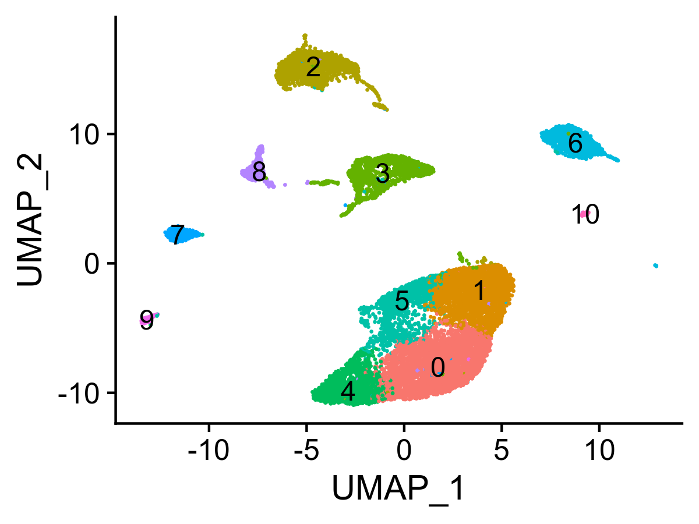
Figure 5. UMAP visualization of clustered nuclei.
Normalize and scale integrated samples
DefaultAssay(liver.integrated) <- 'RNA'
liver.integrated <- NormalizeData(liver.integrated, normalization.method = "LogNormalize", scale.factor = 10000, verbose = FALSE)
all.genes <- rownames(liver.integrated)
liver.integrated <- ScaleData(object = liver.integrated, features = all.genes)Identify cluster marker genes
liver.integrated.markers <- FindAllMarkers(liver.integrated, only.pos = TRUE, min.pct = 0.25, logfc.threshold = 0.25, verbose = FALSE)
liver.integrated.top <- liver.integrated.markers %>% group_by(cluster) %>% top_n(n = 5, wt = avg_logFC) # Only look at top 5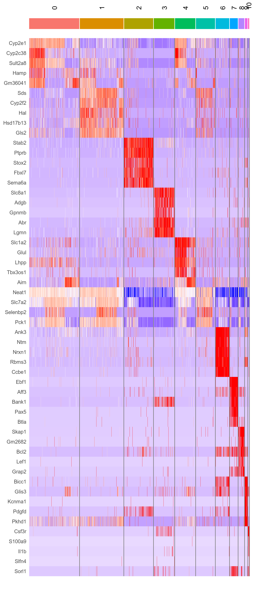
Figure 6. Heatmap of top 5 cluster marker genes.
Comparing to published datasets
Importing published datasets
Halpern, K. B., Shenhav, R., Matcovitch-Natan, O., Toth, B., Lemze, D., Golan, M., Massasa, E. E., Baydatch, S., Landen, S., Moor, A. E., Brandis, A., Giladi, A., Avihail, A. S., David, E., Amit, I. and Itzkovitz, S. (2017). Single-cell spatial reconstruction reveals global division of labour in the mammalian liver. Nature 542(7641), 352-356. PMID: 28166538
#halpern <- readRDS('./PublishedData/HalpernLiver.RData')
halpern <- readRDS('./PublishedData/HalpernLiverLayers.RData')
DefaultAssay(halpern) <- 'RNA'A total of 1415 cells were sequenced using MARS-seq with a total of 27297 genes detected. The median number of genes detected per cell was 2364 while the median UMIs per cell was 10649.
Halpern, K. B., Shenhav, R., Massalha, H., Toth, B., Egozi, A., Massasa, E. E., Medgalia, C., David, E., Giladi, A., Moor, A. E., Porat, Z., Amit, I. and Itzkovitz, S. (2018). Paired-cell sequencing enables spatial gene expression mapping of liver endothelial cells. Nature biotechnology. PMID: 30222169
LEC.halpern <- readRDS('./PublishedData/HalpernLEC.RData')
DefaultAssay(LEC.halpern) <- 'RNA'A total of 3151 cells were sequenced using MARS-seq with a total of 33924 genes detected. The median number of genes detected per cell was 417 while the median UMIs per cell was 611.
Xiong, X., Kuang, H., Ansari, S., Liu, T., Gong, J., Wang, S., Zhao, X. Y., Ji, Y., Li, C., Guo, L., Zhou, L., Chen, Z., Leon-Mimila, P., Chung, M. T., Kurabayashi, K., Opp, J., Campos-Perez, F., Villamil-Ramirez, H., Canizales-Quinteros, S., Lyons, R., Lumeng, C. N., Zhou, B., Qi, L., Huertas-Vazquez, A., Lusis, A. J., Xu, X. Z. S., Li, S., Yu, Y., Li, J. Z. and Lin, J. D. (2019). Landscape of Intercellular Crosstalk in Healthy and NASH Liver Revealed by Single-Cell Secretome Gene Analysis. Mol Cell 75(3), 644-660 e5. PMID: 31398325
Xiong.nash <- readRDS('./PublishedData/xiong.nash.cellannotated.RData')
DefaultAssay(Xiong.nash) <- 'RNA'
Xiong.nash <- FindVariableFeatures(object = Xiong.nash)A total of 33168 cells were sequenced using the 10X Genomics platform with a total of 32452 genes detected. The median number of genes detected per cell was 1484 while the median UMIs per cell was 3706.
DefaultAssay(liver.integrated) <- 'RNA'Cell/nuclei label prediction using Seurat
Halpern et al. (2017)
liver.anchors <- FindTransferAnchors(reference = halpern, query = liver.integrated, dims = 1:30)
predictions <- TransferData(anchorset = liver.anchors, refdata = halpern$celltype, dims = 1:30)
liver.integrated <- AddMetaData(liver.integrated, metadata = predictions)Halpern et al. (2018)
liver.anchors <- FindTransferAnchors(reference = LEC.halpern, query = liver.integrated, dims = 1:30)
predictions <- TransferData(anchorset = liver.anchors, refdata = LEC.halpern$celltype, dims = 1:30)
liver.integrated <- AddMetaData(liver.integrated, metadata = predictions)Xiong et al. (2019)
liver.anchors <- FindTransferAnchors(reference = Xiong.nash, query = liver.integrated, dims = 1:30)
predictions <- TransferData(anchorset = liver.anchors, refdata = Xiong.nash$celltype, dims = 1:30)
liver.integrated <- AddMetaData(liver.integrated, metadata = predictions)Evaluating prediction scores
prediction.scores <- liver.integrated@meta.data[, grepl("^prediction|integrated_snn_res.0.2", names(liver.integrated@meta.data))]
prediction.scores <- prediction.scores[,-which(names(prediction.scores) == "prediction.score.max")]
colnames(prediction.scores) <- gsub("prediction.score.", "", colnames(prediction.scores))
prediction.scores <- melt(prediction.scores, id.vars = "integrated_snn_res.0.2", variable.name = "source", value.name = "score")prediction.matrix <- tapply(prediction.scores$score, list(prediction.scores$integrated_snn_res.0.2, prediction.scores$source), median)
liver.hm <- pheatmap(prediction.matrix, cluster_rows = FALSE, cluster_cols = FALSE, color = colorRampPalette(c("white","red"))(200), display_numbers = FALSE, silent = TRUE)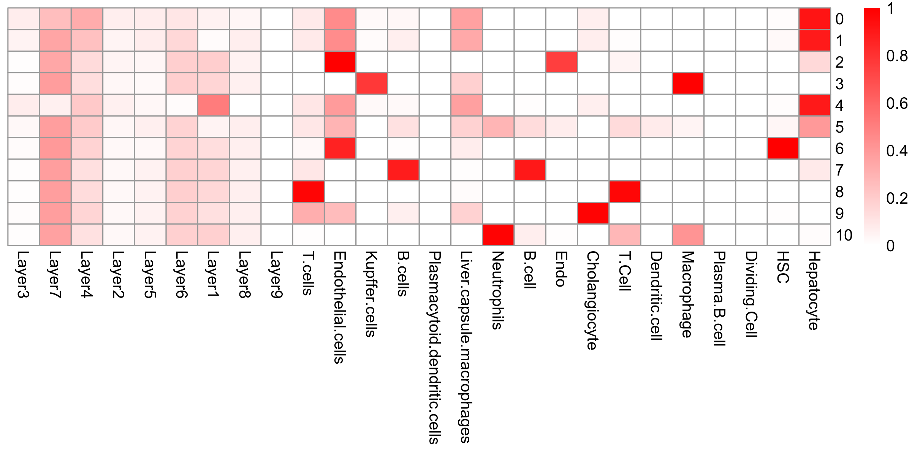
Figure 7. (Left) UMAP visualiation of annotated clusters and (right) heatmap demonstrating the scaled median label transfer prediction score.
Reannotating clusters using common names
# Common cell type names
Cluster.0 <- "Hepatocytes - Midcentral"
Cluster.1 <- "Hepatocytes - Portal"
Cluster.2 <- "Endothelial Cells"
Cluster.3 <- "Macrophages"
Cluster.4 <- "Hepatocytes - Central"
Cluster.5 <- "Hepatocytes - Midportal"
Cluster.6 <- "Stellate Cells"
Cluster.7 <- "B Cells"
Cluster.8 <- "T Cells"
Cluster.9 <- "Cholangiocytes"
Cluster.10 <- "Neutrophils"
new.cluster.ids <- c(Cluster.0, Cluster.1, Cluster.2, Cluster.3, Cluster.4, Cluster.5, Cluster.6, Cluster.7, Cluster.8, Cluster.9, Cluster.10)
names(new.cluster.ids) <- levels(liver.integrated)
liver.integrated <- RenameIdents(liver.integrated, new.cluster.ids)
liver.integrated$celltype <- Idents(liver.integrated)
liver.integrated$celltype <- Idents(liver.integrated)
liver.integrated$celltype <- factor(liver.integrated$celltype, levels = c(
"Hepatocytes - Central",
"Hepatocytes - Midcentral",
"Hepatocytes - Midportal",
"Hepatocytes - Portal",
"Cholangiocytes",
"Endothelial Cells",
"Stellate Cells",
"Macrophages",
"B Cells",
"T Cells",
"Neutrophils"
))
# Reset idents in order to add ontology annotation
Idents(liver.integrated) <- 'integrated_snn_res.0.2'Cell ontology annotation
Click here for ontology source
Cluster.0 <- "CL:0000182:Hepatocyte"
Cluster.1 <- "CL:0000182:Hepatocyte"
Cluster.2 <- "CL:0002262:Endothelial Cell of Sinusoid"
Cluster.3 <- "CL:0000235:Macrophage"
Cluster.4 <- "CL:0000182:Hepatocyte"
Cluster.5 <- "CL:0000182:Hepatocyte"
Cluster.6 <- "CL:0000632: Hepatic Stellate Cell"
Cluster.7 <- "CL:1000488:Cholangiocyte"
Cluster.8 <- "CL:0000084:T cell"
Cluster.9 <- "CL:0000236:B Cell"
Cluster.10 <- "CL:0000775:Neutrophil"
new.cluster.cl <- c(Cluster.0, Cluster.1, Cluster.2, Cluster.3, Cluster.4, Cluster.5, Cluster.6, Cluster.7, Cluster.8, Cluster.9, Cluster.10)
names(new.cluster.cl) <- levels(liver.integrated)
liver.integrated <- RenameIdents(liver.integrated, new.cluster.cl)
liver.integrated$celltype.ontology <- Idents(liver.integrated)
liver.integrated$celltype.ontology <- Idents(liver.integrated)
liver.integrated$celltype.ontology <- factor(liver.integrated$celltype.ontology, levels = c(
"CL:0000182:Hepatocyte",
"CL:1000488:Cholangiocyte",
"CL:0002262:Endothelial Cell of Sinusoid",
"CL:0000632: Hepatic Stellate Cell",
"CL:0000235:Macrophage",
"CL:0000236:B Cell",
"CL:0000084:T cell",
"CL:0000775:Neutrophil"
))Merge celltype and treatment for differential expression analysis
liver.integrated$cluster.treatment <- paste(liver.integrated$integrated_snn_res.0.2, liver.integrated$treatment, sep = "_")
liver.integrated$celltype.treatment <- paste(liver.integrated$celltype, liver.integrated$treatment, sep = "_")Change default identifier to celltype
Idents(liver.integrated) <- 'celltype'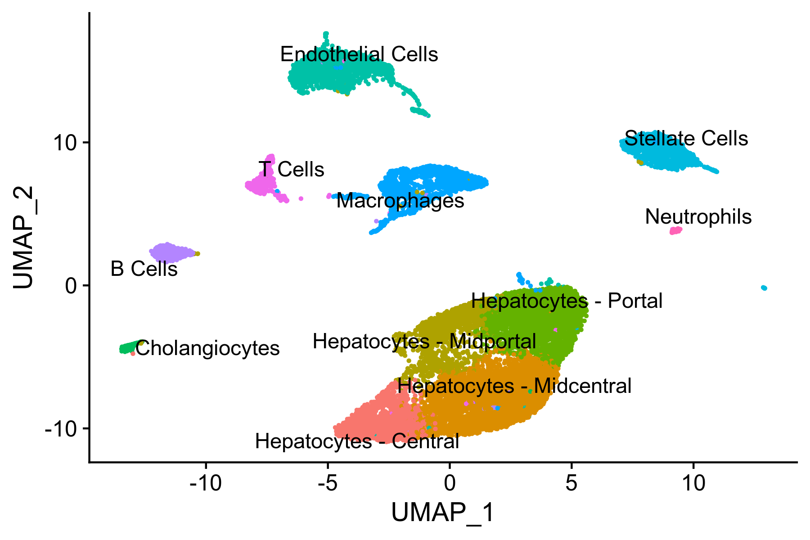
Figure 8. UMAP visualiation of annotated clusters
DefaultAssay(liver.integrated) <- 'RNA'
saveRDS(liver.integrated, file = './finaloutput/liver.integrated.final.RData')Hepatocyte trajectory
Subset and seperate hepatocytes
hepatocytes.integrated <- subset(liver.integrated, subset = celltype.ontology == "CL:0000182:Hepatocyte")
hep.list <- SplitObject(hepatocytes.integrated, split.by = 'orig.ident')Reprocess counts from hepatocytes only
hep.list <- lapply(X = hep.list, FUN = function(x) {
x <- NormalizeData(x, normalization.method = "LogNormalize", scale.factor = 10000, verbose = FALSE)
x <- FindVariableFeatures(x, selection.method = "vst", nfeatures = 2000, verbose = FALSE)
x <- ScaleData(x, features = rownames(x), verbose = FALSE)
})zone.mat <- read.table('./PublishedData/HalpernZonationGenes.txt', header = T, sep = "\t")
zone.mat <- subset(zone.mat, zone.mat$q.values <= 0.005)
common.genes <- intersect(zone.mat$Gene.Symbol, rownames(hepatocytes.integrated))
hepatocytes.integrated@assays$RNA@var.features <- common.geneshep.list <- lapply(X = hep.list, FUN = function(x) {
DefaultAssay(x) <- 'RNA'
x <- RunPCA(x, features = intersect(zone.mat$Gene.Symbol, rownames(x)), verbose = FALSE)
x <- FindNeighbors(x, reduction = "pca", dims = 1:20, verbose = FALSE)
x <- FindClusters(x, resolution = 0.2, verbose = FALSE)
x <- RunTSNE(x, dims = 1:30, max_iter = 2000, verbose = FALSE)
x <- RunUMAP(x, dims = 1:30, verbpse = FALSE)
})Reintegrate samples
hep.anchors <- FindIntegrationAnchors(object.list = hep.list, scale = FALSE)
hep.integrated <- IntegrateData(anchorset = hep.anchors, dims = 1:30)DefaultAssay(hep.integrated) <- "integrated"
hep.integrated <- ScaleData(hep.integrated, verbose = FALSE)
hep.integrated <- RunPCA(hep.integrated, features = intersect(zone.mat$Gene.Symbol, rownames(hep.integrated)))
hep.integrated <- RunTSNE(hep.integrated, dims = 1:30, max_iter = 2000, verbose = FALSE)
hep.integrated <- RunUMAP(hep.integrated, dims = 1:30)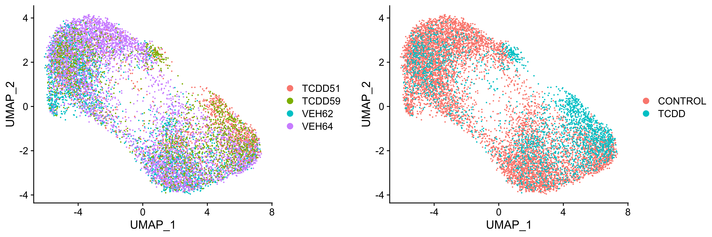
Figure 9. UMAP visualiation of annotated clusters
hep.integrated <- FindNeighbors(hep.integrated, dims = 1:30, verbose = FALSE)
hep.integrated <- FindClusters(hep.integrated, resolution = 1.2, verbose = FALSE)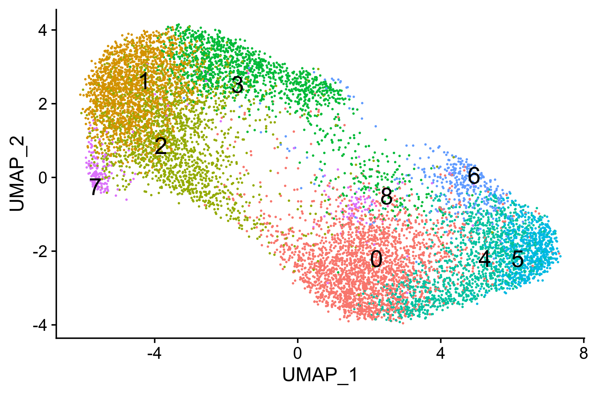
Figure 10. UMAP visualiation of annotated clusters
Compare to Halpern zonal expression
DefaultAssay(halpern) <- 'RNA'
DefaultAssay(hep.integrated) <- 'RNA'
liver.anchors <- FindTransferAnchors(reference = halpern, query = hep.integrated, features = common.genes, k.anchor = 100)
predictions <- TransferData(anchorset = liver.anchors, refdata = halpern$celltype, dims = 1:10)
hep.integrated <- AddMetaData(hep.integrated, metadata = predictions)prediction.scores <- hep.integrated@meta.data[, grepl("^prediction.score.Layer|integrated_snn_res.1.2", names(hep.integrated@meta.data))]
colnames(prediction.scores) <- gsub("prediction.score.", "", colnames(prediction.scores))
prediction.scores <- melt(prediction.scores, id.vars = "integrated_snn_res.1.2", variable.name = "source", value.name = "score")
prediction.scores$source <- factor(prediction.scores$source, levels = c("Layer1", "Layer2", "Layer3", "Layer4", "Layer5", "Layer6", "Layer7", "Layer8", "Layer9"))
prediction.matrix <- tapply(prediction.scores$score, list(prediction.scores$integrated_snn_res.1.2, prediction.scores$source), median)
write.table(prediction.matrix, file = './finaloutput/prediction.matrix.hepatocytes.txt', sep = '\t')
# prediction.matrix <- prediction.matrix[ ,grep('Layer', names(prediction.matrix))]
# prediction.matrix <- prediction.matrix[, colSums(prediction.matrix) > 0]cl_cb <- function(hcl, mat){
hcl$order <- c(6,7,5,1,9,8,3,4,2)
return(hcl)
}hep.hm <- pheatmap(scale(prediction.matrix),
#clustering_distance_cols = "manhattan",
cluster_cols=FALSE,
cluster_rows=TRUE,
clustering_callback = cl_cb,
fontsize_row = 10,
fontsize_col = 10,
color = colorRampPalette(c("white","red"))(2000),
display_numbers = FALSE,
silent = TRUE
)
# hep.hm <- pheatmap(prediction.matrix, cluster_rows = FALSE, cluster_cols = FALSE, color = colorRampPalette(c("white","red"))(200), display_numbers = FALSE, silent = TRUE)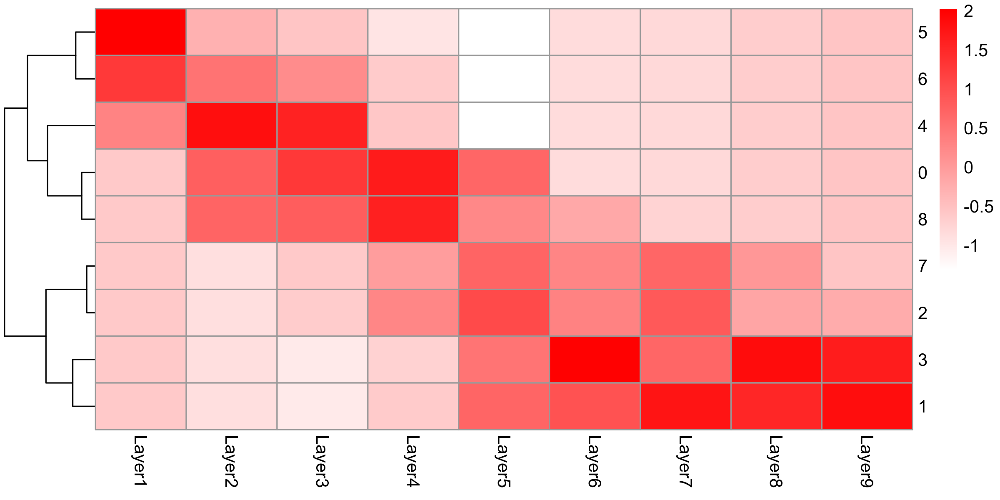
Figure 10. UMAP visualiation of annotated clusters
Slingshot topology
DefaultAssay(hep.integrated) <- 'RNA'
sim <- as.SingleCellExperiment(hep.integrated)
condition <- as.factor(sim$treatment)
sim <- slingshot(sim, reducedDim = 'UMAP')colors <- colorRampPalette(brewer.pal(11,'Spectral')[-6])(500)
plotcol <- colors[cut(sim$slingPseudotime_1, breaks = 500)]
i = (0:30)/10
legcol <- colors[cut(i, breaks = 500)]
plot(reducedDims(sim)$UMAP, col = plotcol, pch = 16, asp = 1)
lines(SlingshotDataSet(sim), lwd = 2, col = 'black')
start = 2.4
rect(start + i, 5.0, start + 0.1 + i, 5.6, col = legcol[(i*10)+1], lwd = 0, lty = 'blank')
rect(start, 5, start + 3.1, 5.6)
text(1.834, -2.239, '0')
text(-4.54, 2.390, '1')
text(-3.4877, 1.076, '2')
text(-1.379, 2.824, '3')
text(4.778, -2.372, '4')
text(6.481, -1.97, '5')
text(4.632, -0.223, '6')
text(-5.339, -0.0601, '7')
text(0.3739, -0.1409, '8') Figure 11. Trajectory analysis of hepatocyte nuclei.
Figure 11. Trajectory analysis of hepatocyte nuclei.
layout(matrix(1:2,nrow = 1))
boxplot(slingPseudotime(sim)[,1] ~ condition, col = brewer.pal(3,'Set1')[1:2], main = '', xlab = 'Condition', ylab = 'Pseudotime', las = 1, pch = 16)
layout(1)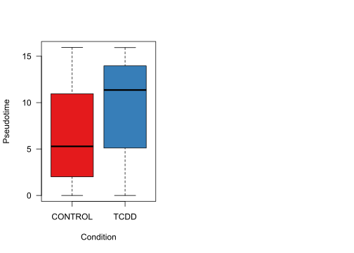 Figure 12. Distribution of hepatocyte nuclei along the trajectory in control and treated samples.
Functional enrichment
library(GSVA, quietly = TRUE)
library(GSEABase, quietly = TRUE)The GSVA package implements the methodology described in the previous section in the function gsva() which requires two main input arguments: the gene expression data and a collection of gene sets. The expression data can be provided either as a matrix object of genes (rows) by sample (columns) expression values. The collection of gene sets can be provided either as a list object with names identifying gene sets and each entry of the list containing the gene identifiers of the genes forming the corresponding set, or as a GeneSetCollection object as defined in the GSEABase package.
Enrichment analysis was performed using the Mus musculus (mouse) Gene Ontology from the Gene Set Knowledgebase (GSKB)
__Prepare data for GSVA analysis
gsets <- getGmt('./PublicDatasets/MousePath_All_gmt-Format.gmt')
input_data <- liver.integrated@assays$RNA@scale.data
rownames(input_data) <- toupper(rownames(input_data)) #GSKB defaults gene symbols as all capitals.Run GSVA
This process is extremely slow (~12h using 4 cores and 128GB memory on the MSU HPCC)
path_enrich <- gsva(input_data, gsets, min.sz = 10, max.sz = 300, verbose = TRUE, parallel.sz = 1)Filter unwanted Gene Sets
path_enrich <- path_enrich[-(grep('CTD', rownames(path_enrich))), ]
path_enrich <- path_enrich[-(grep('STITCH', rownames(path_enrich))), ]
path_enrich <- path_enrich[-(grep('HPO', rownames(path_enrich))), ]
path_enrich <- path_enrich[-(grep('MATADOR', rownames(path_enrich))), ]
path_enrich <- path_enrich[-(grep('DRUGBANK', rownames(path_enrich))), ]
path_enrich <- path_enrich[-(grep('HUMANCYC', rownames(path_enrich))), ]
path_enrich <- path_enrich[-(grep('SIDER', rownames(path_enrich))), ]
path_enrich <- path_enrich[-(grep('T3DB', rownames(path_enrich))), ]
path_enrich <- path_enrich[-(grep('METHCANCER', rownames(path_enrich))), ]
path_enrich <- path_enrich[-(grep('METHYCANCER', rownames(path_enrich))), ]
path_enrich <- path_enrich[-(grep('LOC_', rownames(path_enrich))), ]
path_enrich <- path_enrich[-(grep('CANCERGENES', rownames(path_enrich))), ]
path_enrich <- path_enrich[-(grep('L2L_', rownames(path_enrich))), ]
path_enrich <- path_enrich[-(grep('LIT_', rownames(path_enrich))), ]
dim(path_enrich)Convert enrichment analysis
Seurat object data is replaced with enrichment analysis data in order to leverage the same tools
GSVA.enrichment <- liver.integratedGSVA.enrichment@assays$RNA@counts <- path_enrich
GSVA.enrichment@assays$RNA@data <- path_enrich
GSVA.enrichment@assays$RNA@scale.data <- path_enrich
GSVA.enrichment@assays$integrated@scale.data <- path_enrich
GSVA.enrichment@assays$integrated@data <- path_enrich
GSVA.enrichment@assays$integrated@var.features <- rownames(liver.integrated.pathway@assays$integrated@scale.data)Dimensionality reduction
DefaultAssay(GSVA.enrichment) <- 'integrated'
GSVA.enrichment <- RunPCA(liver.integrated.pathway, features = VariableFeatures(object = liver.integrated.pathway), verbose = FALSE)
GSVA.enrichment <- RunTSNE(liver.integrated.pathway, dims = 1:30, max_iter = 2000, verbose = FALSE)
GSVA.enrichment <- RunUMAP(liver.integrated.pathway, dims = 1:30)
saveRDS(GSVA.enrichment, file = './finaloutput/GSVA.pathway.final.RData')funct.umap <- DimPlot(GSVA.enrichment, label = TRUE, repel = TRUE, split.by = 'treatment') + NoLegend()
ggsave(file = 'functional.umap.png', plot = funct.umap, width = 12, height = 4)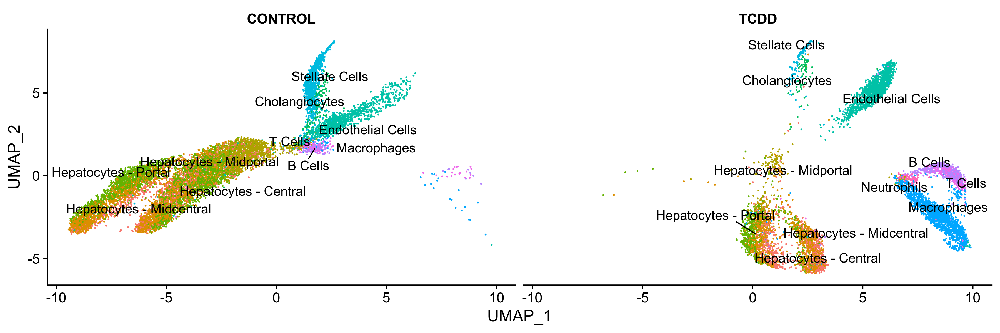 Figure 13. UMAP visualization of functional enrichment analysis.
Identification of marker functions
pathway.integrated.markers <- FindAllMarkers(GSVA.enrichment, min.fc = 0.25, only.pos = TRUE, verbose = FALSE)
saveRDS(pathway.integrated.markers, file = './finaloutput/pathway.integrated.markers.RData')Biochemistry and Molecular Biology, Institute for Integrative Toxicology, Michigan State University, naultran@msu.edu↩